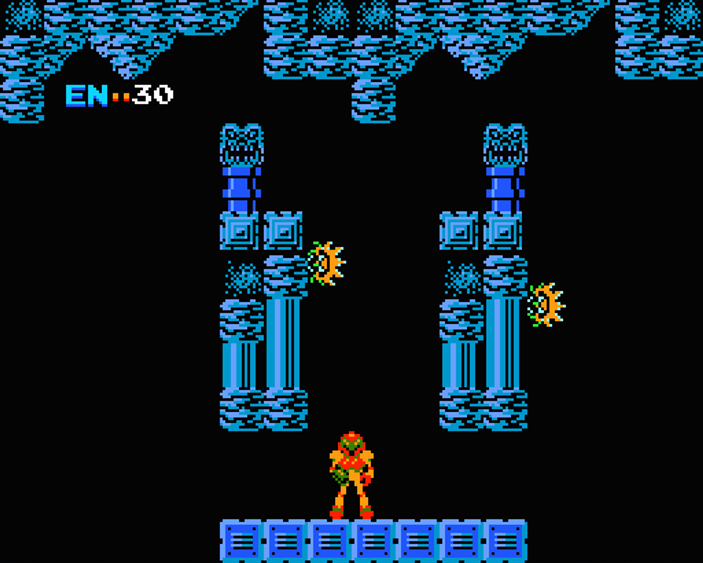
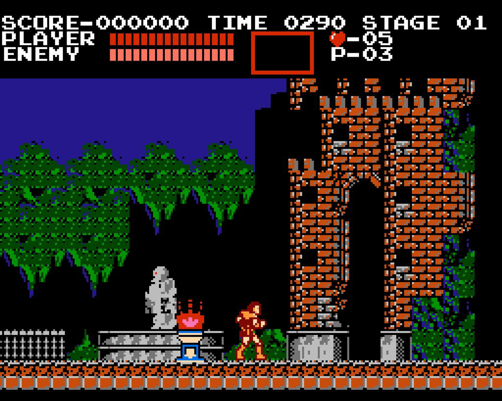
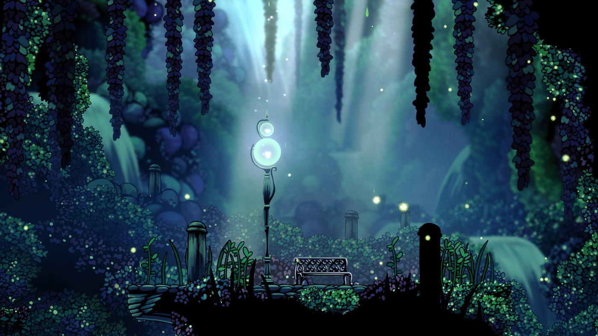

What is that?
Simple, metroidvania is a term used to refer to action-adventure games that have a specific set of characteristics and mechanics, the most obvious one is that these types of games are “open-ended” meaning that you can back-track your steps and acquire new items or maybe a new skill that helps you make progress in the game. The term comes from the fusion of two game titles: Metroid (1986) and Castlevania (1986).

The very first Metroid game, 1986

The first Castlevania game, 1986
The former, an action-adventure platformer game created by Nintendo, where the player controls the bounty hunter Samus Aran, who protects the galaxy from Space Pirates and other malevolent forces and their attempts to harness the power of the parasitic Metroid creatures.
The latter, an action-adventure platformer game largely set in the mysterious castle of Count Dracula, the main antagonist of the Belmont clan of vampire hunters. Almost every instance of the game has you taking control of one of the Belmont’s family member or even Dracula’s son, Alucard.
Fun fact: Alucard is just Dracula spelled backwards, really creative.
These types of games are very popular amongst hardcore and casual gamers because they offer a simple and stylish way of playing with a really nice touch of nostalgia to those who have been playing games since the very first metroidvanias games appear. Also, they just are fun and straightforward, you can only go left or right, maybe up and down but that’s it; 2D fun that gets you immerse in a world where you need to find your way into or out off.
Note: there are some 3D games that are considered metroidvanias, but we are talking about the OG’s. Chill.
So what?
Nothing bro, metroidvanias are a lot of fun. If you have never played one, I will recommend you to play a Metroid game, Metroid: zero mission, to be precise. This is a remake of the original Metroid. It was released for the Game Boy, so if you can’t get it using legal and regular means. Just download an emulator and enjoy the retro experience I loved having on my Game Boy Advance SP.
AND, if you are a tech newbie, just play a new (or not so new) one, there’s lots and lots of great metroidvanias out there. Just to name a few:
- Hollow Knight
- Skul: The hero slayer
- Dead Cells
- Guacamelee!
- Blasphemous
- Axiom verge
- Ori and the blind forest
- Metroid: Dread
- Metroid Prime
- Castlevania: Symphony of the night
- Castlevania: Aria of sorrow
If you notice, the last 4 are the original games, where the concept came from, so you need an emulator to play those, or maybe you are a Nintendo bi… boy and you have a Switch console where you can play some of them using Nintendo shitty online service.
I don’t have anything against Nintendo games, but as a company they suck ass and don’t have any consideration for us gamers at all, nor even care for game preservation. A fucking crime if you ask me, but I digress.
Forgot to tell you that this term was popularized by Jeremy Parish, a great video game journalist that also makes awesome YouTube videos on retro gaming and all that cool “beginning of beginnings” and “how we got where we are” stuff we all like to hear people talk about because is nostalgic, and we need to feel something else than depression, but I digress (again). It’s a deep dive into retro gaming.
Okay okay man, I will play. But what is so special about these games?
Look, bro… they just are. They have great storytelling, beautiful environments, wonderful music, fantastic art and they are FUN. Games are supposed to be fun, dude. Most of the metroidvanias out there are. Of course there’s some shit game someone made when they were learning how to make games or just developers thinking us gamers, connoisseurs of the great art that are video games, will spend their money on a shit/mediocre sequel made just to money grab our asses.
Expanding on my “beautiful environments” argument, look at this image:

Hollow Knight resting bench
And that’s only a fraction of the world, a still image of the map.
Now listen to this from Ori and the blind forest, a song from the OST.
As said before, art. Even better, playable art.
Metroid and Castlevania is a tremendous influence on game developers, gamers and even people outside this world that is gaming have been influenced by these games in one way or another. I just wanted to talk about it and shed some light on what this term is, why these games are great and maybe get you to try and play some or at least one of the games I mentioned.
Metroidvania is not just a genre, it has made possible that the 2D aesthetic remains popular and more important than anything it has made possible for indie developers to create fantastic games and with that get the opportunity to make more awesome games or cool sequels to their previous one. I’m obviously nostalgic about it, but I know for sure games can make you feel better and happier, and most of these games don’t have complex mechanics, making them an excellent starting point for newcomers to the world of gaming.
Well, thanks, I guess.
You are very welcome. Maybe one of my next posts will be about my favorite games. Still, make sure you not only play these games but dive a little bit on how they were made, I always find myself caring and enjoying something more when I understand the effort required to create the final product and what inspired all the work done.
But that’s about it, if you want more information you can just google stuff, the correct way of getting more info on something you don’t know.
Play games, doesn’t matter what you like, there’s some random ass game out there that you will like and then make a whole post on your blog yapping about it because you want people to know a little more about it, or you can go to YouTube and watch more than 3 hours of content on the lore of a game you just played but can’t get enough of it, then use a 1-hour-long video of said lore as a sleeping aid because its kind of relaxing, and you found some comfort in that, but I digress.
That’s about it.
Thanks to the creators of this amazing games, you made my life more enjoyable.